jQuery插件开发方式大概有三种：
- 通过$.extend()来扩展jQuery
- 通过$.fn 向jQuery添加新的方法
- 通过$.widget()应用jQuery UI的部件工厂方式创建
通常我们使用第二种方法来进行简单插件开发，说简单是相对于第三种方式。第三种方式是用来开发更高级jQuery部件的，该模式开发出来的部件带有很多jQuery内建的特性，比如插件的状态信息自动保存，各种关于插件的常用方法等，非常贴心，这里不细说。
而第一种方式又太简单，仅仅是在jQuery命名空间或者理解成jQuery身上添加了一个静态方法而以。所以我们调用通过$.extend()添加的函数时直接通过$符号调用（$.myfunction()）而不需要选中DOM元素($('#example').myfunction())。请看下面的例子。
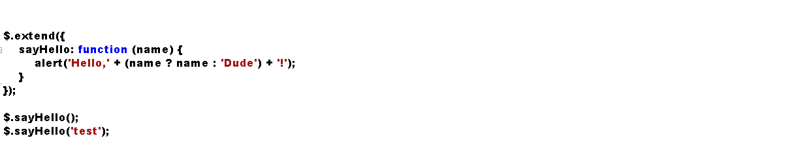
上面代码中，通过$.extend()向jQuery添加了一个sayHello函数，然后通过$直接调用。到此你可以认为我们已经完成了一个简单的jQuery插件了。
但如你所见，这种方式用来定义一些辅助方法是比较方便的。定义一次后可以通过jQuery在程序中任何需要的地方调用它。
但这种方式无法利用jQuery强大的选择器带来的便利，要处理DOM元素以及将插件更好地运用于所选择的元素身上，还是需要使用第二种开发方式。你所见到或使用的插件也大多是通过此种方式开发。
插件开发
下面我们就来看第二种方式的jQuery插件开发。
基本方法
先看一下它的基本格式：
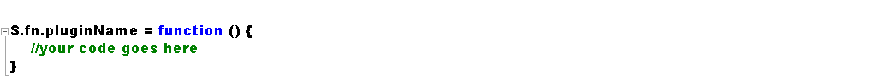
基本上就是往$.fn上面添加一个方法，名字是我们的插件名称。然后我们的插件代码在这个方法里面展开。
比如我们将页面上所有链接颜色转成红色，则可以这样写这个插件：
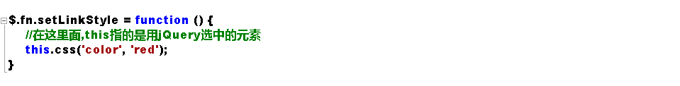
在插件名字定义的这个函数内部，this指代的是我们在调用该插件时，用jQuery选择器选中的元素，一般是一个jQuery类型的集合。比如$('a')返回的是页面上所有a标签的集合，且这个集合已经是jQuery包装类型了，也就是说，在对其进行操作的时候可以直接调用jQuery的其他方法而不需要再用美元符号来包装一下。
所以在上面插件代码中，我们在this身上调用jQuery的css()方法，也就相当于在调用 $('a').css()。
理解this在这个地方的含义很重要。这样你才知道为什么可以直接商用jQuery方法同时在其他地方this指代不同时我们又需要用jQuery重新包装才能调用，下面会讲到。初学容易被this的值整晕，但理解了就不难。
现在就可以去页面试试我们的代码了，在页面上放几个链接，调用插件后链接字体变成红色。
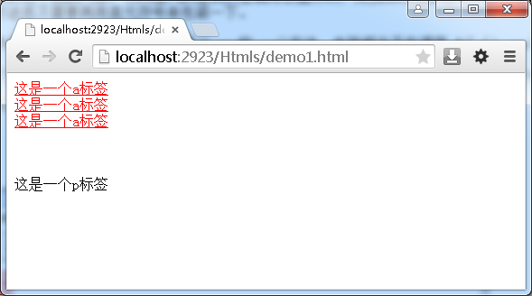
下面进一步，在插件代码里处理每个具体的元素，而不是对一个集合进行处理，这样我们就可以针对每个元素进行相应操作。
我们已经知道this指代jQuery选择器返回的集合，那么通过调用jQuery的.each()方法就可以处理合集中的每个元素了，但此刻要注意的是，在each方法内部，this指带的是普通的DOM元素了，如果需要调用jQuery的方法那就需要用$来重新包装一下。
比如现在我们要在每个链接显示链接的真实地址，首先通过each遍历所有a标签，然后获取href属性的值再加到链接文本后面。
更改后我们的插件代码为：
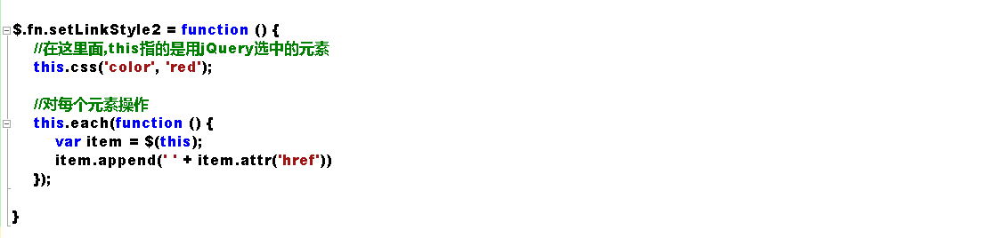
调用代码还是一样的，我们通过选中页面所有的a标签来调用这个插件
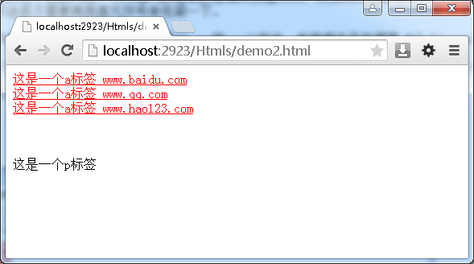
到此，你已经可以编写功能简单的jQuery插件了。是不是也没那么难。
下面开始jQuery插件编写中一个重要的部分，参数的接收。
支持链式调用
我们都知道jQuery一个时常优雅的特性是支持链式调用，选择好DOM元素后可以不断地调用其他方法。
要让插件不打破这种链式调用，只需return一下即可。
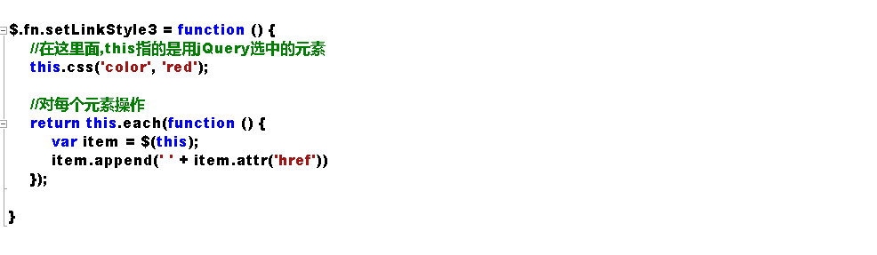
调用代码
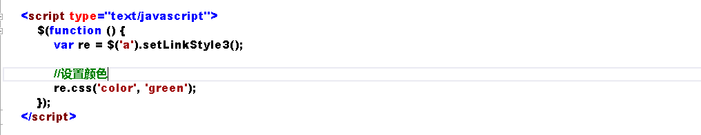
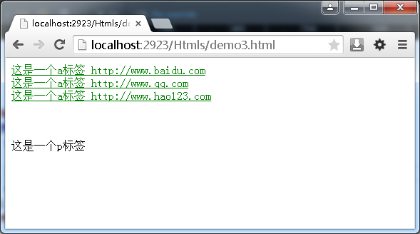
让插件接收参数
一个强劲的插件是可以让使用者随意定制的，这要求我们提供在编写插件时就要考虑得全面些，尽量提供合适的参数。
比如现在我们不想让链接只变成红色，我们让插件的使用者自己定义显示什么颜色，要做到这一点很方便，只需要使用者在调用的时候传入一个参数即可。同时我们在插件的代码里面接收。另一方面，为了灵活，使用者可以不传递参数，插件里面会给出参数的默认值。
在处理插件参数的接收上，通常使用jQuery的extend方法，上面也提到过，但那是给extend方法传递单个对象的情况下，这个对象会合并到jQuery身上，所以我们就可以在jQuery身上调用新合并对象里包含的方法了，像上面的例子。当给extend方法传递一个以上的参数时，它会将所有参数对象合并到第一个里。同时，如果对象中有同名属性时，合并的时候后面的会覆盖前面的。
利用这一点，我们可以在插件里定义一个保存插件参数默认值的对象，同时将接收来的参数对象合并到默认对象上，最后就实现了用户指定了值的参数使用指定的值，未指定的参数使用插件默认值。
为了演示方便，再指定一个参数fontSize，允许调用插件的时候设置字体大小。
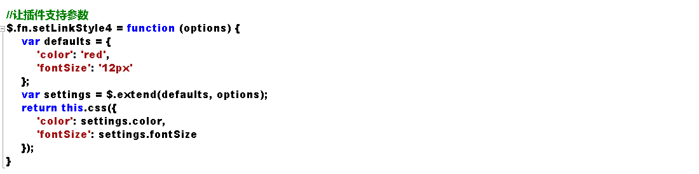
现在，我们调用的时候指定颜色，字体大小未指定，会运用插件里的默认值12px。
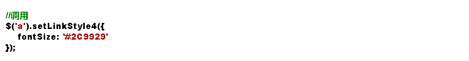
同时指定颜色与字体大小：
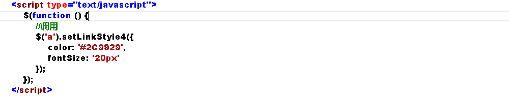
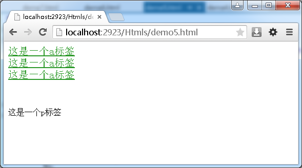
保护好默认参数
注意到上面代码调用extend时会将defaults的值改变，这样不好，因为它作为插件因有的一些东西应该维持原样，另外就是如果你在后续代码中还要使用这些默认值的话，当你再次访问它时它已经被用户传进来的参数更改了。
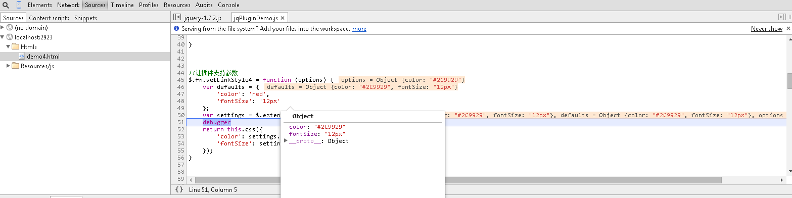
一个好的做法是将一个新的空对象做为$.extend的第一个参数，defaults和用户传递的参数对象紧随其后，这样做的好处是所有值被合并到这个空对象上，保护了插件里面的默认值。
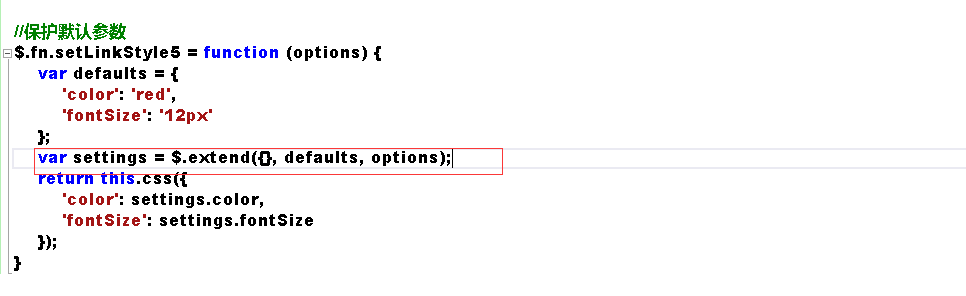
到此，插件可以接收和处理参数后，就可以编写出更健壮而灵活的插件了。若要编写一个复杂的插件，代码量会很大，如何组织代码就成了一个需要面临的问题，没有一个好的方式来组织这些代码，整体感觉会杂乱无章，同时也不好维护，所以将插件的所有方法属性包装到一个对象上，用面向对象的思维来进行开发，无疑会使工作轻松很多。
面向对象的插件开发
为什么要有面向对象的思维，因为如果不这样，你可能需要一个方法的时候就去定义一个function，当需要另外一个方法的时候，再去随便定义一个function，同样，需要一个变量的时候，毫无规则地定义一些散落在代码各处的变量。
还是老问题，不方便维护，也不够清晰。当然，这些问题在代码规模较小时是体现不出来的。
如果将需要的重要变量定义到对象的属性上，函数变成对象的方法，当我们需要的时候通过对象来获取，一来方便管理，二来不会影响外部命名空间，因为所有这些变量名还有方法名都是在对象内部。
接着上面的例子，我们可以把这个插件抽象成一个美化页面的对象，因为他的功能是设置颜色啊字体啊什么的，当然我们还可以加入其他功能比如设置下划线啊什么的。当然对于这个例子抽象成对象有点小题大做，这里仅作演示用。以后我可能会介绍我编写的一个jQuery插件SlipHover,其中代码就比较多，这样的模式就用得上了。
所以我们新建一个对象命名为Beautifier，然后我们在插件里使用这个对象来编码。
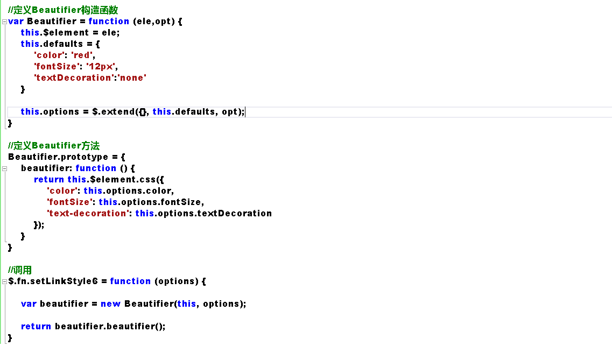
通过上面这样一改造，我们的代码变得更面向对象了，也更好维护和理解，以后要加新功能新方法，只需向对象添加新变量及方法即可，然后在插件里实例化后即可调用新添加的东西。
插件的调用还是一样的，我们对代码的改动并不影响插件其他地方，只是将代码的组织结构改动了而以。
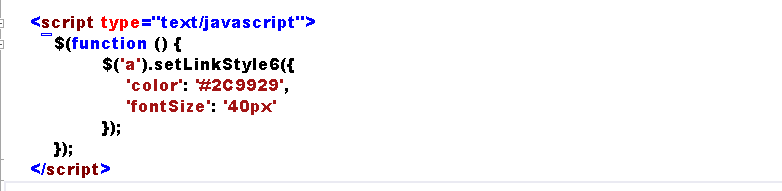

指定文字带下划线（我们在Beautifier对象中新加的功能，默认不带下划线，如上面的例子）的调用：
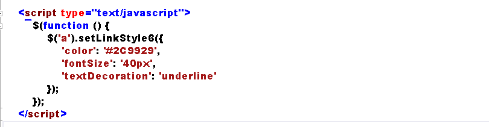
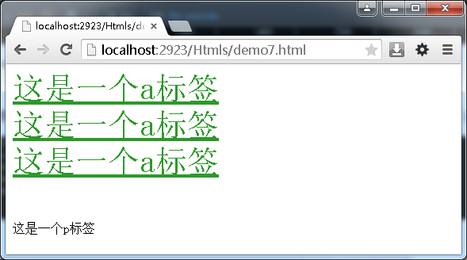
到这里，你可以更好地编写复杂的插件同时很好地组织代码了。当我们回头去看上面的代码时，其实也还是有改进空间的。也就是下面介绍的关于命名空间及变量各什么的，一些杂项。
关于命名空间
不仅仅是jQuery插件的开发，我们在写任何JS代码时都应该注意的一点是不要污染全局命名空间。因为随着你代码的增多，如果有意无意在全局范围内定义一些变量的话，最后很难维护，也容易跟别人写的代码有冲突。
比如你在代码中向全局window对象添加了一个变量status用于存放状态，同时页面中引用了另一个别人写的库，也向全局添加了这样一个同名变量，最后的结果肯定不是你想要的。所以不到万不得已，一般我们不会将变量定义成全局的。
一个好的做法是始终用自调用匿名函数包裹你的代码，这样就可以完全放心，安全地将它用于任何地方了，绝对没有冲突。
用自调用匿名函数包裹你的代码
我们知道JavaScript中无法用花括号方便地创建作用域，但函数却可以形成一个作用域，域内的代码是无法被外界访问的。如果我们将自己的代码放入一个函数中，那么就不会污染全局命名空间，同时不会和别的代码冲突。
如上面我们定义了一个Beautifier全局变量，它会被附到全局的window对象上，为了防止这种事情发生，你或许会说，把所有代码放到jQuery的插件定义代码里面去啊，也就是放到$.fn.myPlugin里面。这样做倒也是种选择。但会让我们实际跟插件定义有关的代码变得臃肿，而在$.fn.myPlugin里面我们其实应该更专注于插件的调用，以及如何与jQuery互动。
所以保持原来的代码不变，我们将所有代码用自调用匿名函数包裹。
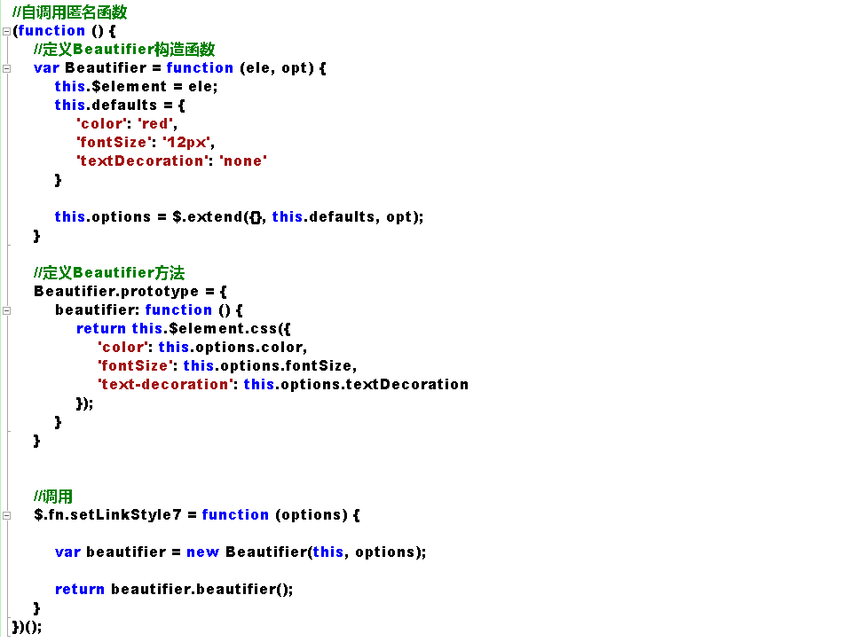
这样做的好处，也就是上面所阐述的那样。另外还有一个好处就是，自调用匿名函数里面的代码会在第一时间执行，页面准备好过后，上面的代码就将插件准备好了，以方便在后面的代码中使用插件。
目前为止似乎接近完美了。如果再考虑到其他一些因素，比如我们将这段代码放到页面后，前面别人写的代码没有用分号结尾，或者前面的代码将window, undefined等这些系统变量或者关键字修改掉了，正好我们又在自己的代码里面进行了使用，那结果也是不可预测的，这不是 我们想要的。我知道其实你还没太明白，下面详细介绍。
将系统变量以变量形式传递到插件内部
来看下面的代码，你猜他会出现什么结果？
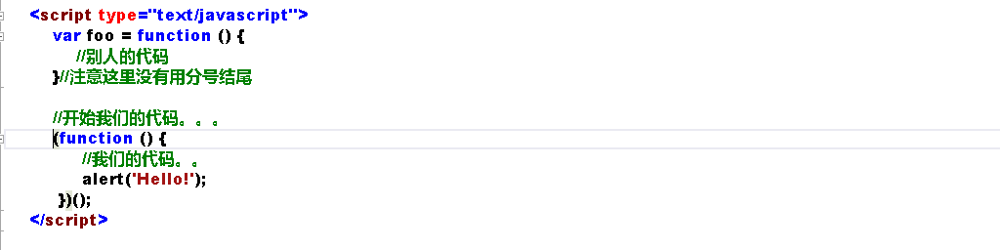
本来别人的代码也正常工作，只是最后定义的那个函数没有用分号结尾而以，然后当页面中引入我们的插件时，报错了，我们的代码无法正常执行。
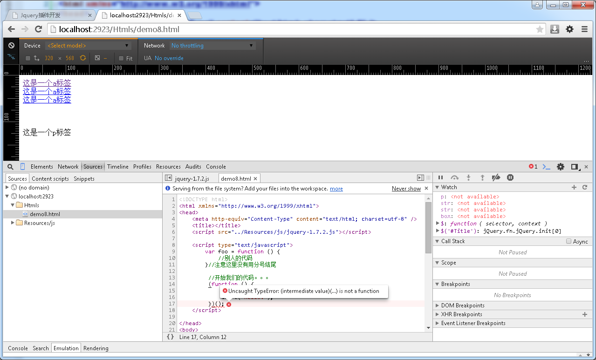
原因是我们用来充当自调用匿名函数的第一对括号与上面别人定义的函数相连，因为中间没有分号嘛，总之我们的代码无法正常解析了，所以报错。
所以好的做法是我们在代码开头加一个分号，这在任何时候都是一个好的习惯。
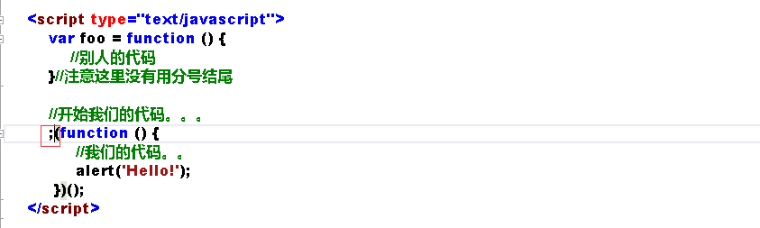
同时，将系统变量以参数形式传递到插件内部也是个不错的实践。
当我们这样做之后，window等系统变量在插件内部就有了一个局部的引用，可以提高访问速度，会有些许性能的提升
最后我们得到一个非常安全结构良好的代码：
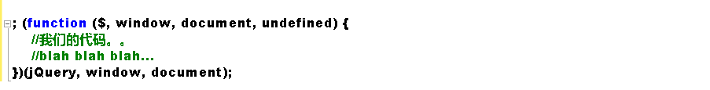
而至于这个undefined，稍微有意思一点，为了得到没有被修改的undefined，我们并没有传递这个参数，但却在接收时接收了它，因为实际并没有传，所以‘undefined’那个位置接收到的就是真实的'undefined'了。是不是有点hack的味道，值得细细体会的技术，当然不是我发明的，都是从前人的经验中学习。
所以最后我们的插件成了这样：
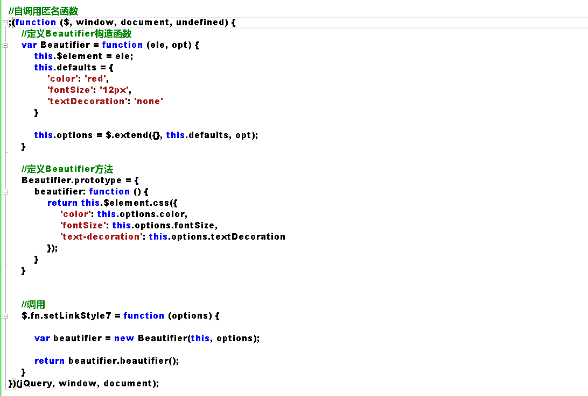
一个安全，结构良好，组织有序的插件编写完成。